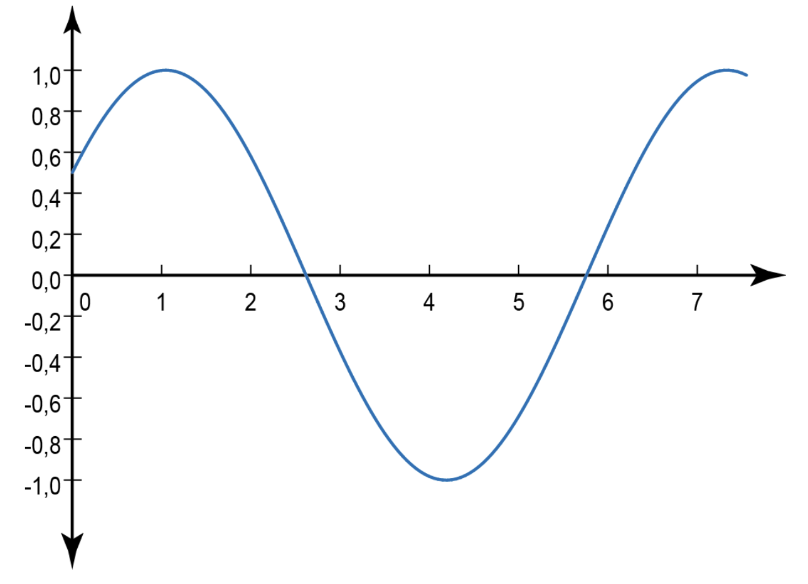
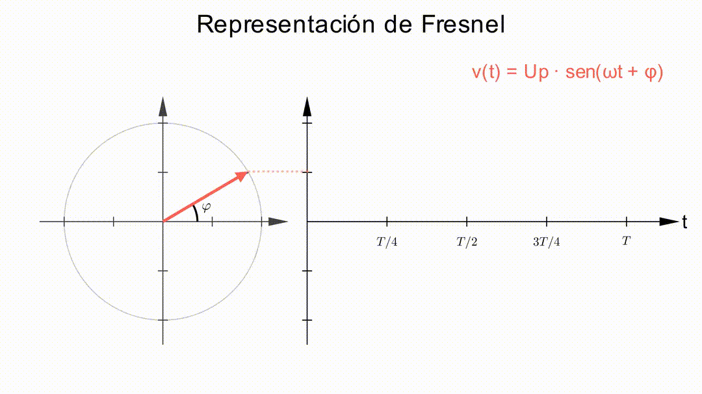

Una señal sinusoidal genérica es aquella que sigue una variación dada por alguna de las siguientes expresiones:
\[f(t) = A_p \cdot \sin(\omega \cdot t + \varphi)\] \[f(t) = A_p \cdot \cos(\omega \cdot t + \delta)\]
En la siguiente imagen puedes ver la representación de una función seno con una amplitud \(A_p\) de 1 y un desfase \(\varphi\) de 30° (\(\pi/6\) radianes) respecto al origen:

2.1 Descripción de una señal sinusoidal
Una función sinusoidal es una función periódica porque se repite a intervalos regulares de tiempo. El tiempo que tarda en repetirse se llama periodo (T) y se mide en segundos (s). Se denomina frecuencia al número de veces que se repite la señal en un segundo, su unidad es el hercio (Hz). La relación entre frecuencia y periodo es inversa: \(f = 1/T\).
Para una señal sinusoidal de la forma \(f(t) = A_p \cdot \sin(\omega \cdot t + \varphi)\):
- \(A_p\) es la amplitud, es decir, el máximo valor que alcanza la señal.
- \(\omega\) es la frecuencia angular o pulsación expresada en rad/s, tiene unidades de velocidad angular. Su valor es: \(\omega = 2\pi \cdot f = \frac{2\pi}{T}\).
- \(t\) es el tiempo medido en segundos (s).
- \(\varphi\) es el ángulo de fase inicial medido en radianes (rad).
Se llama ciclo al conjunto de valores que toma la función en un periodo. La representación en el tiempo es la utilizada cuando se estudian señales con un osciloscopio.

- Amplitud: \(A_p = 5\)
- Periodo: \(T = 20 \text{ ms}\)
- Frecuencia: \(f = 1/T = 50 \text{ Hz}\)
- Pulsación: \(\omega = 2\pi \cdot f = 100\pi \text{ rad/s}\)
- Fase inicial, \(\varphi\): La fase inicial está señalada en la figura; es necesario expresarla en radianes, no en tiempo. Para relacionar ambos sabemos que el periodo \(T\) se corresponde con un ángulo de \(2\pi\) radianes; según esto se puede establecer que: \[\varphi = \frac{2\pi \cdot t_{0}}{T} = \frac{2\pi \cdot 2,5}{20} = \frac{\pi}{4} \text{ rad}\]
La expresión que define la señal del ejemplo será, por lo tanto:
\[f(t)=5\cdot\sen\left(100\pi t+\frac{\pi}{4}\right)\]
2.2 Valores significativos de una señal sinusoidal
Valor instantáneo
Es el valor que tiene la onda en cada instante. Se puede calcular evaluando la expresión matemática en un instante de tiempo \(t\) determinado.
Valor de pico o valor de cresta
Es el valor máximo que toma la señal, es decir, su amplitud.
Valor medio
Es la media aritmética de todos los valores instantáneos que pueden darse en un periodo. Se calcula matemáticamente así:
\[U_m = \frac{1}{T} \int_0^T u(t)\,dt\]
En el caso de la señal seno, el valor medio sería cero al ser una función simétrica. Por lo tanto, se utiliza el valor medio en un semiperiodo (T/2), que sí tiene un valor útil y que tiene esta expresión:
\[U_m = \frac{1}{T/2} \int_0^{T/2} u(t)\,dt\]
Valor eficaz
Aunque el valor medio de la intensidad sea cero, eso no significa que no haya movimiento de electrones ni consumo de energía en una resistencia R. Los electrones están constantemente realizando un movimiento de vibración cambiando de sentido en cada semiperiodo. Este movimiento hace que, por efecto Joule, consuman energía en la resistencia, independientemente del sentido del movimiento.
La potencia consumida será
\[P(t) = R\,I^2 = R\,I_0^2\sen^2(\omega t)\]
Y la energía consumida en un periodo, por tanto, será
\[E = \int_{0}^{T}P(t)dt= \int_{0}^{T} R\,I_0^2\sen^2(\omega t) dt=R\,I_0^2\frac{T}{2}\]
Si comparamos este resultado con una corriente continua que consumiera la misma energía (es decir, si estudiamos el problema “como si la corriente fuera continua”, circulando una intensidad Ie):
\[E = R\,I_e^2T\]
Vemos que la intensidad de corriente continua necesaria para consumir la misma energía que la corriente alterna es:
\[I_{e}^{2}=\frac{I_{0}^{2}}{2}\Rightarrow I_{e}=\frac{I_{0}}{\sqrt{2}}\]
Este valor se denomina valor eficaz, y es el más usado al estudiar circuitos de corriente alterna ya que, como ya veremos, usando valores eficaces sí se cumple la ley de Ohm, cosa que no ocurre con los valores instantáneos, debido al desfase.
Del mismo modo que la intensidad eficaz es \(I_{e}=\frac{I_{0}}{\sqrt{2}}\), el voltaje eficaz es \(V_{e}=\frac{V_{0}}{\sqrt{2}}\)
2.3 Representación fasorial y compleja
Una magnitud sinusoidal se puede representar como la proyección vertical de un vector rotativo (fasor) que gira a una velocidad angular \(\omega\) en sentido contrario al de las agujas del reloj. Su módulo es igual al valor de cresta (\(U_p\)) y su posición inicial es la fase inicial (\(\varphi\)).

2.3.1 Formas de expresar un fasor
Nota sobre notación: Al tratarse de una magnitud vectorial, a partir de ahora utilizaremos la notación de vector con flecha (ej. \(\vec{U}, \vec{I}\)) para referirnos al fasor completo (número complejo), distinguiéndolo así claramente de su módulo o valor escalar (ej. \(U, I\)).
- Forma polar: \(\vec{U} = U_{p} \angle \varphi\).
- Forma compleja: \(\vec{U} = U_{p} \cos \varphi + j \cdot \sin \varphi\). Donde \(j=\sqrt{-1}\) es la unidad imaginaria, que en Electrotecnia se denomina \(j\) para no confundirla con la intensidad. Representa un giro de +90° en el diagrama fasorial.